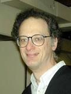
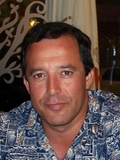

Invited Speakers
This year the keynote talks will be delivered by:
| Speaker: |
|
|
Jens Groth
University College London,
UK
|
|
| Title: |
Pairing-Based Non-Interactive Zero-Knowledge Proofs |
| Abstract: |
A non-interactive zero-knowledge proof permits the construction
of a proof of the truth of a statement that reveals nothing else but the
fact that the statement is true. Non-interactive
zero-knowledge proofs are
used in the construction of numerous cryptographic schemes such as
public-key cryptosystems and advanced digital signatures.
The only practically efficient constructions of non-interactive
zero-knowledge proofs that are based on standard
intractability assumptions
come from pairing based-cryptography. In this talk, we sketch these
constructions and show how pairing-based non-interactive zero-knowledge
proofs smoothly integrate with other pairing-based
cryptographic schemes. |
| Biography: |
Jens Groth received his PhD in Computer Science from Aarhus
University. As a postdoc at University of California Los Angeles he
received the 2007 UCLA Chancellor's Award for Postdoctoral Research.
Currently, he is Assistant Professor in Computer Science at University
College London. His research interests include electronic voting,
anonymization protocols, advanced digital signatures,
public-key encryption
and zero-knowledge proofs.
|
| Speaker: |
|  |
Joseph H. Silverman
Brown University, USA
|
|
| Title: |
A Survey of Local and Global Pairings on Elliptic Curves
and Abelian Varieties |
| Abstract: |
There are many bilinear pairings that naturally appear when one
studies elliptic curves, abelian varieties, and related
groups. Some of these pairings, notably the Weil and Tate
pairings, can be defined
over finite fields and have important applications in cryptography.
Others, such as the Neron-Tate canonical height pairing and the
Cassel's pairing on the Shafarevich-Tate group, are of fundamental
importance in number theory and arithmetic geometry, but
have not yet seen significant use in cryptography. In this
talk I will present a
survey of the many pairings that are used to study
elliptic curves and
abelian varieties, and I will attempt to fit them into a wider
framework that illustrates their interrelationships.
|
| Biography: |
Joseph Silverman received an Sc.B. from Brown University
in 1977 and a
Ph.D. from Harvard University in 1982 under the direction of John
Tate. He then held positions at M.I.T. and Boston University before
moving to Brown University in 1988, where he is currently
a professor
of mathematics. Silverman works primarily in number theory,
arithmetic geometry, arithmetic dynamics and cryptography. He has
published more than 100 research articles in these areas, and has
written or coauthored seven books, including several on elliptic
curves and one on cryptography. Two of his books on elliptic curves
were awarded the Steele Prize by the American Mathematical
Society in 1998.
|
| Speaker: |
|  |
Gene Tsudik
University of California at Irvine, USA
|
|
| Title: |
Some Security Topics with Possible Applications for
Pairing-Based Cryptography |
| Abstract: |
Over the last decade, pairing-based cryptography has found a
wide range of interesting applications. It often yields the most
elegant (if not the cheapest) techniques. This talk will
overview two topics where pairing-based methods either have not
been applied or have not yet achieved their potential.
The first topic is privacy-preserving set operations, such as private
set intersection (PSI) protocols. Despite lots of prior work,
state-of-the-art (in terms of efficiency) PSI is grounded in more
mundane non-pairing based settings. This is puzzling, since the
same does not hold with closely related secret handshakes and
affiliation-hiding key exchange (AH-AKE) techniques. The second
topic is more applied: security in unattended wireless sensor
networks (UWSNs). We discuss certain unique security issues
occurring in UWSNs, overview some protection measures, and
consider whether pairing-based cryptography has some applications
in this context.
Finally, we consider code attestation of embedded devices and, after
discussing current approaches, once again, ask whether pairing
techniques can be of use. |
| Biography: |
Gene Tsudik is a "Lois and Peter Griffin" Professor of
Computer Science at the University of California, Irvine (UCI).
He obtained his PhD in Computer Science from USC in 1991 for research
on firewalls and Internet access control. Before coming to UCI in
2000, he was a Project Leader at IBM Zurich Research Laboratory
(1991-1996) and USC Information Science Institute
(1996-2000). Over the years, his research interests included:
routing, firewalls, authentication, mobile networks, secure
e-commerce, anonymity ad privacy, group communication, digital
signatures, key management, mobile ad hoc networks, as well as
database privacy and secure storage. He currently serves as the
Director of Secure Computing and Networking Center (SCONCE) and
the Vice-Chair of the Computer Science Department. In 2007, he was
on sabbatical at the University of Rome as a Fulbright Senior
Scholar. Since 2009, he is the Editor-in-Chief of ACM Transactions
on Information and Systems Security (TISSEC).
|